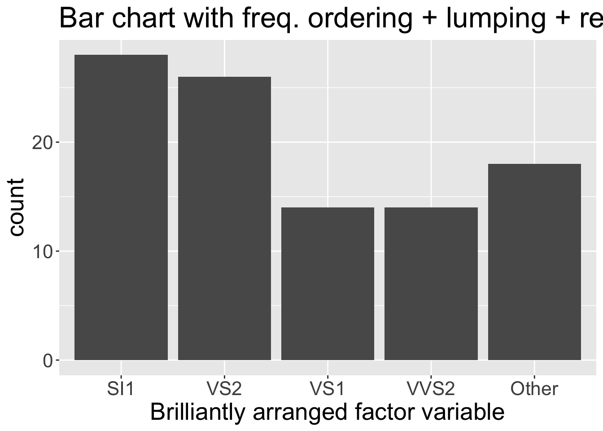

f <- factor(c("low", "medium", "high", "medium", "low"))
typeof(f)[1] "integer"str(f) Factor w/ 3 levels "high","low","medium": 2 3 1 3 2factors, levels, categorical data w/ base & forcats
February 10, 2026
Categorical variables
Examples
Category Types
Also known as
Do not call categorical data “qualitative data.” It’s a terrible name that misrepresents what categorical data is. Categorical data is still data, and it can be analyzed quantitatively (e.g., counts, proportions, regression models). The term “qualitative” implies that it’s not data or not quantitatively analyzable, which is incorrect and misleading.
It also discredits the value of actual qualitative data (like interview transcripts, open-ended survey responses, etc.) by lumping it together with categorical data, which is a completely different type of data that requires different methods of analysis.
Factors
Strings
Compare object size of factor vs character vector with repeated values
Break point for memory efficiency is somewhere around 200ish strings (depending on length, number of unique levels, etc.). For small datasets where strings are more or equally efficient, it’s not going to matter enough to care about the size distinction. For enormous datasets where you do need to care about efficiency, that’s where factors do impact processing notably.
Core base R factor functions:
factor(): Create factorlevels(): View/set levelsnlevels(): Count levelsas.character(): Convert to stringas.numeric(): Get underlying integersIntegers are assigned in alphabetical order by default (high=1, low=2, medium=3), not order of appearance.
forcats package: simplify working with factorsforcats:
Simplify working with factors
fct_* naming
Create
Create factors
Inspect
Examine levels
Combine
Combine and standardize levels
Reorder
Change level order
Reassign
Rename and redistribute levels
Add/Drop
Add or remove levels
Create: as_factor Inspect: fct_unique, fct_count, fct_match Combine: fct_c, fct_unify Reorder: fct_relevel, fct_infreq, fct_reorder, fct_reorder2, fct_rev, fct_inorder, fct_shift, fct_shuffle Reassign: fct_recode, fct_relabel, fct_anon, fct_collapse, fct_lump_*n, fct_other Add/Drop: fct_expand, fct_drop, fct_na_value_to_level
factor()
forcats: Create factors with as_factor()
f <- factor(x, levels = c(...))
levels argument: Set specific levels and orderlevels vector must match unique values in xx will be created but have no observationsx without corresponding levels will become NAas_factor() necessarily preserves order of appearancefactor(x, levels = c(...), labels = c(...))
In other languages (like Stata), factors can have both levels and labels, where levels are the underlying values and labels are the human-readable names. In R, the levels of a factor serve both purposes: they define the unique categories (levels) and also provide the labels that are displayed when you print the factor. When you use the labels argument in factor(), it essentially renames the levels to the specified labels. So in R, levels and labels are intertwined, and you control both with the levels and labels arguments when creating a factor.
For ordinal data with meaningful order
Didn’t we just define and redefine order?
Kind of. Regular factors have levels with no inherent order (nominal data), where the “order” is simply how R stores and displays them. Ordered factors explicitly encode an order among the levels (ordinal data).
factor(..., ordered = TRUE):
Encode order with argument
[1] medium small large small medium
Levels: small < medium < large[1] "small" "medium" "large" [1] 2 1 3 1 2ordered(...):
Create ordered factor directly
Levels always have an order, because they are stored as integers and integers are necessarily ordered. Ordered factors explicitly encode that order for ordinal data. This allows for meaningful comparisons and appropriate statistical treatment in models.
When you actually view the contents of an ordered factor, you’ll see that its levels aren’t just listed in order, they have < between them. This is saying to the human user (and R functions that respect ordered factors) that there is a meaningful order to these levels, not simply an arbitrary assignment to numerals that happen to have an order because that’s how numbers work.
[1] medium small large small medium
Levels: small medium large[1] medium small large small medium
Levels: small < medium < largelevels(): View level labelsnlevels(): Count levelsAside from factor and levels, it’s forcats only from here on out!
fct_c(): Combine factors
fct_relevel(): Move levels to specific positions
[1] medium low high medium low
Levels: high low mediumMove specific level to front
Move one level relative to another
fct_reorder() (coming up) that does reorders levels with a different mechanism. In most cases when you need to manually reorder levels, you’re going to use relevel().after = 0: Move “medium” to first position (same as fct_relevel(f, “medium”)) with fct_relevel(f, “medium”, after = 0)
fct_rev(): Reverse current level order
fct_rev use case: flip bar chartUse case: Flip bar chart from top-to-bottom to bottom-to-top
fct_inorder(): Order by first appearance
fct_infreq(): Reorder from most to least common
fct_infreq use case: interpretable bar chartsProbably the most common use case for fct_infreq() is to create bar charts with bars ordered by frequency (most common first). This is often more informative than the default alphabetical ordering.
fct_reorder(f, x, fun): Order factor by summary of another variable
Default: sort by level median
fct_reorder2(f, x, y): Order by relationship with two variables (great for line plots)
Line plot without reorder
Notice that if you use a forcats variable like fct_reorder on a non-factor variable, it will convert it to a factor with the new order. This is a common way to reorder factors on the fly for plotting without needing to create a new variable in your dataset.
fct_recode(): Manually rename specific levels new_name = "old_name"
Create factor with messy level names
Clean up names. Map multiple old levels to same new or existing level individually.
You can create new codes and they don’t have to be strings
fct_collapse(): Combine multiple levels into one new_name = c("old1", "old2")
fct_other(): Lump (non/)specified levels into “Other”
“Lumping” is not the same as “dropping” despite the argument being “drop.” It creates an “other” level, remaps levels to “other”, then drops unused levels.
fct_lump_*() family: Keep levels by condition, lump rest into “Other”
fct_lump_n(): keep most frequent N
fct_lump_prop(): keep levels above percent frequency
Collapsing levels: Use fct_collapse() to combine multiple levels into single level. Show fct_lump() to automatically lump least common levels into “Other”. Demonstrate fct_lump_n(), fct_lump_prop(), fct_lump_min() for different lumping strategies.
fct_expand(): Add new levels without observations
fct_drop(): Remove levels with no observations
[1] A B C
Levels: A B C D Efct_drop use case: tibble filterDropping unused levels: Compare droplevels() with fct_drop() to remove levels with no observations. Commonly used after filtering data.
fct_na_value_to_level(): Convert between NA values and NA levels
WHY? - Make missingness visible in plots - Include NAs in counts and summaries
fct_explicit_na() is deprecated, but you’ll still see it and it still works. The new name fct_na_value_to_level() is more descriptive of what the function actually does, which is to convert NA to explicit “(Something)” level.
forcats functions we didn’t talk about:
as_factor()fct_match(f, lvls): check for levels in ffct_cross(f1, f2): Create interaction factorfct_inseq(): Order by natural sequencefct_shift(): Shift levels L or R, wrapping aroundfct_shuffle(): Randomly permute levelsfct_lump_lowfreq(): Lump low-frequency levelsfct_relabel(): Rename levels with functionfct_anon(): Anonymize to random integersString cleaning → Factor creation
Common workflow:
Messy categorical (string) data with inconsistent entries
Pipeline wth str and factor creation in one step
Data cleaning workflows: Demonstrate pipeline combining string cleaning (trimming, case conversion) with factor creation. Show fixing inconsistent categorical entries.
Make better plots with factor control
fct_infreq, fct_reorder)fct_lump_*)Move “other” level to the end

Preparing data for visualization: Show reordering factors for sorted bar charts and line plots. Demonstrate collapsing rare categories for cleaner plots. Illustrate controlling legend order.
Factor order matters in models! The first level is the reference category. Example: using mtcars data, predict mpg using cyl (number of cylinders) as a factor variable.
Fit regression model with cyl as factor
Call:
lm(formula = mpg ~ factor(cyl), data = mtcars)
Residuals:
Min 1Q Median 3Q Max
-5.2636 -1.8357 0.0286 1.3893 7.2364
Coefficients:
Estimate Std. Error t value Pr(>|t|)
(Intercept) 26.6636 0.9718 27.437 < 2e-16 ***
factor(cyl)6 -6.9208 1.5583 -4.441 0.000119 ***
factor(cyl)8 -11.5636 1.2986 -8.905 8.57e-10 ***
---
Signif. codes: 0 '***' 0.001 '**' 0.01 '*' 0.05 '.' 0.1 ' ' 1
Residual standard error: 3.223 on 29 degrees of freedom
Multiple R-squared: 0.7325, Adjusted R-squared: 0.714
F-statistic: 39.7 on 2 and 29 DF, p-value: 4.979e-09Use fct_rev() to change reference level
Call:
lm(formula = mpg ~ fct_rev(factor(cyl)), data = mtcars)
Residuals:
Min 1Q Median 3Q Max
-5.2636 -1.8357 0.0286 1.3893 7.2364
Coefficients:
Estimate Std. Error t value Pr(>|t|)
(Intercept) 15.1000 0.8614 17.529 < 2e-16 ***
fct_rev(factor(cyl))6 4.6429 1.4920 3.112 0.00415 **
fct_rev(factor(cyl))4 11.5636 1.2986 8.905 8.57e-10 ***
---
Signif. codes: 0 '***' 0.001 '**' 0.01 '*' 0.05 '.' 0.1 ' ' 1
Residual standard error: 3.223 on 29 degrees of freedom
Multiple R-squared: 0.7325, Adjusted R-squared: 0.714
F-statistic: 39.7 on 2 and 29 DF, p-value: 4.979e-09The first level is the “dummy” or reference category. Output is only interpretable in relation to that first level.